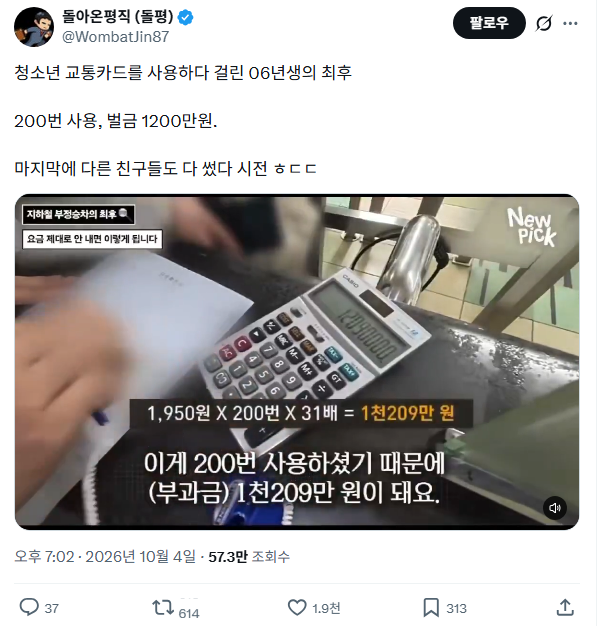

청소년 교통카드 쓰다가 벌금 1200만원.jpg
댓글
이미 다른 친구 29명분까지 저친구가 낸거라 괜찮아
이거 보니깐 저번에 700번인가;;써서 5천만원정도 나온사람도 있던데 좀 버티다 그냥 돈 바로 계산하더라..
잡혔는데 계산 안하면 더 ㅈ되니까
근데 그자리에서 바로 계산하는거보고 돈도있는놈들이 참..
ㅎㄷㄷ 5천을 즉납 ㄷㄷ
그거 버티면 대충 1달내로 모든 금융활동 정지박히고 월 이자 10퍼단위로 쌓임ㅋㅋㅋㅋ
ㅋㅋㅋㅋ 존나 꼬심
뭐 보통 분할납부할게요 하고 엉엉울다가 집에가야지 ㅋㅋ
버티면 법정이자 계속 붙을듯..
국가가 내 돈줄을 조이기 시작하면 안낼수가없음 ㅋㅋ
개인이야 귀찮아서 압류같은거 안하겠지만 거긴 법적절차만 하는 부서까지 있을테니깐
와 시발 ㅋㅋㅋㅋㅋㅋ
06년생이 청소년인데 왜.. 벌금을 내지..? 라고 생각을 했는데
다시 생각해보니 06년생 21살이네.. 내가 늙크크라 당연히 학생이라 생각했다..
벌금을 감면해줄 테니 그 다른 친구들이 누군지 알려주시죠.
청소년카드 생일 지나면 자동으로 전환되는데 고의지
저렇게 내는 사례를 부정사용자들도 눈깔이 달려있으면 볼텐데
그럼 다음 행동은 나도 이제 정상적으로 써야지 할까 아니면 나만 안걸리면 돼 하다가 고구마줄기처럼 주렁주렁 걸리는걸까
아무래도 후자가 많으니까 계속 저런게 나오겠지? 30배말고 100배로 하자
스무살이 1200도 버거울텐데 4000 내라고 하면ㅋㅋㅋ
청소년 카드가 자기 인적사항 등록해서 쓰는걸텐데 생일 지나면 자동으로 성인 되지 않나?
동생꺼 쓴건가
근데 저건 어떻게 걸리는거임? 역무원이 있을 때 저거 써서 걸리는건가
부정승차 실태 방송하려고 각잡고 촬영하는데 옆에 역무원까지 상주하고 있던 상태였고
역무원이 그냥 육안으로 살피다가 안 찍고 그냥 가는 사람, 외관상 딱봐도 청소년 아닌데 태그하면 울리는 청소년입니다. 소리 듣고 쫓아가서 확인하니 청소년 아님. 역사무실에서 CCTV까지 다 까보니 몇일치 부정승차 했는지 다 나와서 그걸로 부과금 먹임. 졸라 많이 잡힘.. 상습범은 직원들이 기억 해놨다가 미리 대기타고 잡더라.
진짜 지하철은 참 이상해
돈을 내고 이용해야 한다는 개념이 약한건지
잡히면 태반이 '뭘 이런걸 가지고 그러냐 내면 될거 아니냐' 이딴식임
가게에서 물건 훔치다 걸려도 저딴말 할건가 ㅅㅂ ㅋㅋ
그래서 그지새끼랑 마주치는 서비스업이 지옥이라는거임ㅋㅋ
이거 유튭서 다큐보면 첫번째 나오는사람은 4700만원인가 그랫음 ㅋㅋ
5천은 좀 개오반데
바보네 저걸찍고타네ㅋㅋ 잔액아무것도 안든 카드 한번찍고 가면되는데 저건 잔액까지 들었고 거기다가 결제할때마다 기록남으니 저렇게 천만원 넘게 때려지지..
카드 잔액안든거 쓰다가 잡히는것도 똑같은역에서 똑같은시간에 계속하니까 걸리는거고 띄엄띄엄하면 절대안걸림
닉값ㄷㄷ
여기 늙크크 사이트라 06이라 그럼 바로 계산 안된다.. 다음부터는 나이도 표기하도록. 이상
와 스무살이 1200을 내려면 쉽지 않을텐데ㄷㄷ
내가 학자금 2000 갚는것도 취직하고 3년 걸렸는데
고작 20만원 아낄려고 지옥으로 다이브했네
아니 요즘에 k패스 쓰면 할인 ㅈㄴ 될텐데 ㅋㅋㅋ
즉시 스니치 ㅋㅋ
한 두번 쓸 때 안 잡고 원기옥 모아서 한 번에 잡음 ㅋㅋ
저거 막 몇천만원 나올 때 그래도 뭐 대충 몇백 정도로 감면해주는 제도 있겠지 했는데 진짜 다받더라..
직원분 진짜 단호하게 변명하는 것도 싹 다 안받아주고 칼같이 안내해줌 ㅋㅋㅋ
차라리 찍지 말고 넘어가서 무임승차를 하는게 걸려도 돈은 덜 내겠다
뷰웅신 꼴 좋음 ㅋㅋ 나 같으면 자살한다
다른친구 1명 불때마다 백만원 깎아준다 딜하지